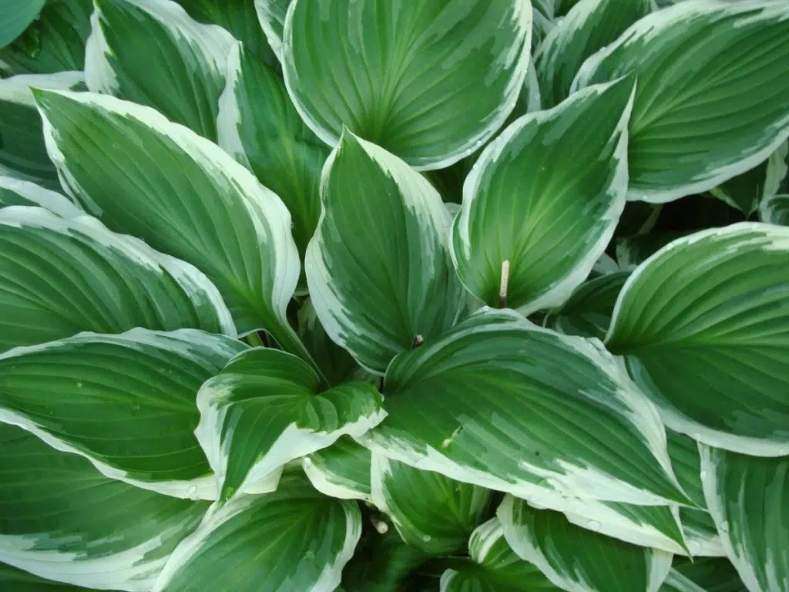

De la misma forma que solemos interesarnos por plantas resistentes al frío para el jardín, no está de más conocer plantas de exterior resistentes para todo el año. Y, aunque pueda parecernos que abogar por la resistencia restringe el número de plantas que podemos disfrutar, no es así. Que sean resistentes no implica que tengamos que renunciar a la flor o a la belleza.
El abanico de plantas es tan amplio que lo realmente complicado es no encontrar aquello que buscamos. De entre todas ellas, nuestro compañero experto en Plantas, Lir, ha seleccionado cinco. Cinco varias plantas de exterior resistentes para todo el año de las que es imposible no enamorarse.
Las hostas son plantas herbáceas rizomatosas que viven varios años. Alcanzan una altura de entre 3 y 45 centímetros, y tienen hojas de color verde, verde azulado, o variegado dependiendo de la variedad y/o del cultivar. Producen flores blancas, violetas o de color lavanda, casi siempre sin aroma, excepto las de la Hosta plantaginea. Se han de tener en sombra, y regar varias veces a la semana ya que no soportan la sequía. Además, es importante que se realicen tratamientos preventivos contra caracoles y babosas, pues estos animales las devoran. Por lo demás, has de saber que resisten las heladas de hasta los -12ºC.
La lavanda inglesa o espliego es una planta perenne que alcanza una altura de hasta 1 metro. Tiene forma redondeada, hojas verdes y flores lilas. Es aromática, y ese aroma es el que hace que los mosquitos se alejen de donde está plantada. Se trata de una de las plantas de exterior resistentes para todo el año que no pueden faltar en ningún jardín o patio, ya que soporta la sequía, el calor extremo (hasta los 40-45ºC) y las heladas de hasta los -15ºC.
Empezamos la lista con una planta de flores rojas que es muy común, de hecho la clivia es una de las que se cultivan más en interiores y patios techados. Pero lo que quizás poca gente sepa es que es capaz de resistir muy bien las heladas. Para ser más exactos, aguanta hasta los 7 grados bajo cero, motivo por el que su cultivo en exterior en climas no demasiado fríos es muy interesante. Se ha de tener en sombra, por ejemplo debajo de un árbol, y regar un par de veces a la semana.
Es una trepadora perfecta para climas templados que también crece bien en los cálidos. Es una trepadora perenne que alcanza los 7 metros de altura, y que produce flores blancas con forma de estrella muy fragantes durante la primavera y el verano. Recuerda mucho al jazmín, de hecho se conoce como falso jazmín o jazmín estrellado, pero es resiste mejor el frío y las heladas. Aguanta hasta los -12ºC.
La Magnolia grandiflora es un árbol perennifolio que crece hasta los 30 metros de altura. Forma una copa muy densa, con ramas pobladas por hojas grandes de hasta 20 centímetros de largo y de color glabro en el haz y con el envés pubescente. Sus flores son blancas y, también, grandes, ya que miden unos 20 centímetros de diámetro. Florece en primavera, y además lo hace desde una edad temprana. El aroma que desprenden es espectacular. Lo mejor es que resiste tanto las heladas de hasta los -18ºC, como el calor de hasta 40ºC. Eso sí, no tolera la cal, por eso se ha de cultivar en suelos ácidos o ligeramente ácidos. Asimismo, es importante que se cultive en sombra o semisombra en climas especialmente cálidos, como el mediterráneo.